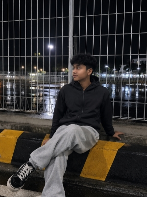

CAPTAIN Z PROFILECPTZ3010

ROUTE
DESTINATION
Checking resources…
Selamat datang di Website Captain Z. Di sini, setiap ide punya arah, setiap langkah menjadi perjalanan, dan setiap perjalanan membawa kita menuju tujuan.

ABOUT THE JOURNEY
Memuat cerita perjalanan…
Lihat selengkapnyaTHE ROUTE
Setiap halaman punya peran. Profile memberi identitas, about memberi konteks, projects meninggalkan jejak, dan contact membuka koneksi.